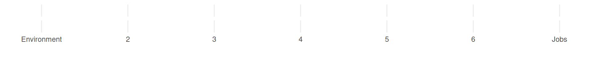
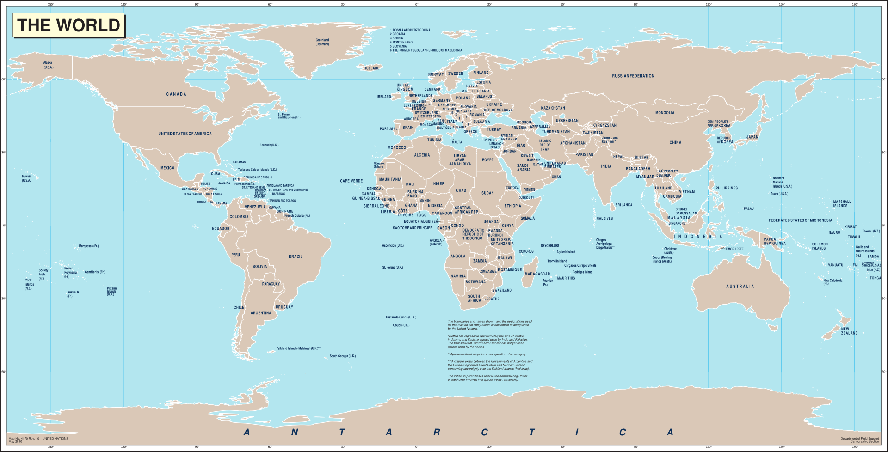

Today’s Agenda
All Scientific Knowledge Begins with Measurement
- Defining and Measuring Concepts
Justin Leinaweaver (Spring 2026)
Our goal as political scientists is to generate knowledge about the social world using the scientific method
Science is the process of testing ideas using empirical data
Empirical data is generated by measuring the world
Therefore, our knowledge depends on measurement!

Pollock, Philip H and Edwards, Barry C. (2024). The Essentials of Political Analysis. 7th ed. Washington DC: CQ Press.
Pollock & Edwards (2026) Chapter 1
Exercise 1c: Religiosity in Politics and Society
Discuss your conceptual definitions of religiosity
Make sure each uses the template, focuses on concrete properties of the concept and makes clear the level of analysis
Pollock & Edwards (2026) Chapter 1
Exercise 4: Measuring Political Knowledge
Warren: 40, 60, 70, 45
Xavier: 48, 48, 50, 54
Yolanda: 49, 50, 51, 50
Zelda: 45, 44, 44, 46
Classify: Valid + Reliable, NV + Reliable, Valid + NR, NV + NR
Pollock & Edwards (2026) Chapter 1
Exercise 4: Measuring Political Knowledge
Warren: 40, 60, 70, 45 (mean: 53.75)
Xavier: 48, 48, 50, 54 (mean: 50)
Yolanda: 49, 50, 51, 50 (mean: 50)
Zelda: 45, 44, 44, 46 (mean: 44.75)
Classify: Valid + Reliable, NV + Reliable, Valid + NR, NV + NR
Pollock & Edwards (2026) Chapter 1
Exercise 7: The Environment vs the Economy
Face validity?
Best construct validity with abortion, climate change, or business regulation?
Pollock, Philip H and Edwards, Barry C. (2024). The Essentials of Political Analysis. 7th ed. Washington DC: CQ Press.
What was the population of the USA in 2025?
Measuring the population of the USA in 2025 requires:
Defining the Concept
Specifying the Tool
Specifying the Process
Testing for Robustness
How many countries are there in the world?
Counting the countries in the world in 2025 requires:
Defining the Concept
Specifying the Tool
Specifying the Process
Testing for Robustness
Number of countries in the world?
Science as Measurement
Science means answering questions with data
Data is generated by measuring the empirical world
All measurements include uncertainty
So, all answers include uncertainty

This semester you will develop skills:
Evaluating data for uncertainty,
Cleaning the data for analysis,
Describing the variation in the data,
Analyzing the variation in the data, and
Reporting your findings in clear and compelling ways.
For Next Class
Freedom House’s Freedom in the World 2025
Review the report and the methodology behind it
Submit reflections to Canvas
IMPORTANT: Sign up for a free Posit Cloud account